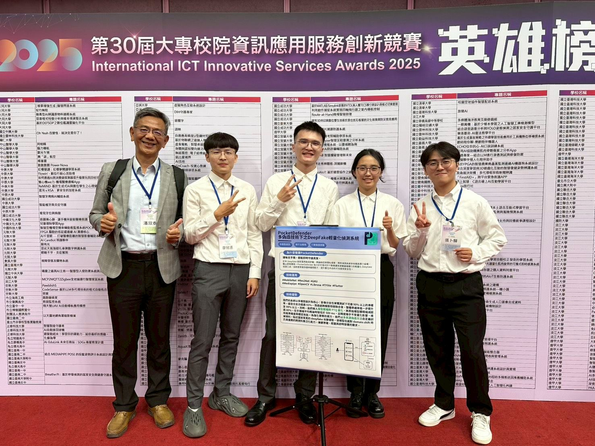
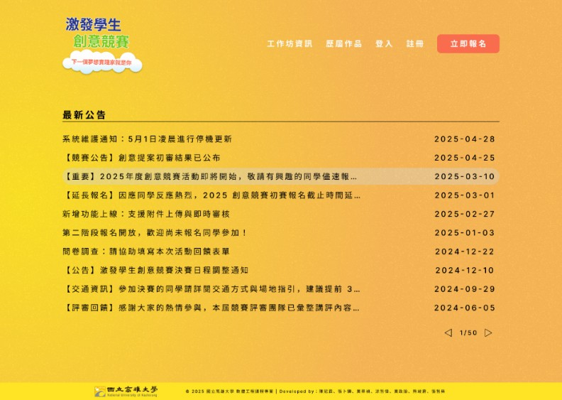
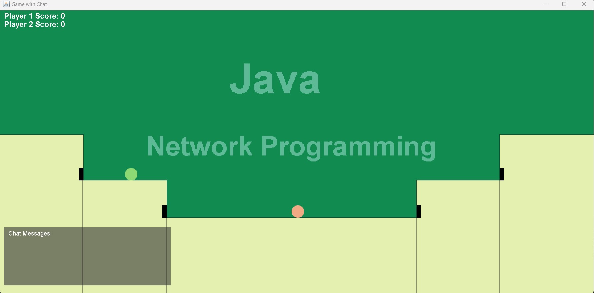
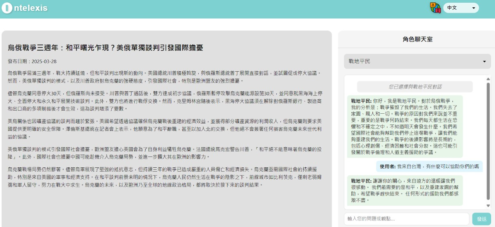

國立高雄大學資工系畢業（GPA 3.97），即將就讀國立中央大學資工所碩士班。 專注於 Generative AI 應用、Edge AI 模型優化與 Spring Boot 後端工程，能獨立完成從 AI 研究到系統落地的全端開發。
研究方向聚焦於輕量化 Deepfake 偵測系統，透過 Post-Training Quantization 技術壓縮模型、 結合多模態融合架構，實現在邊緣裝置上的隱私保護即時推論。 榮獲 iFuzzy 2025 最佳發表獎，全國 AI 競賽電資組第一名等多項肯定。
Senior undergraduate at National University of Kaohsiung, GPA 3.97. Combines hands-on experience in Edge AI (TFLite / Quantization) deployment with proficiency in Java Spring Boot RESTful backend services.
預計研究方向：Edge AI、多模態學習
GPA 3.97 / 4.0 | 歷年系排 6 / 43 | 113-1 系排第 2、113-2 系排第 1 | 演算法、作業系統全系第一
開發 PocketDefender 多模態輕量化 Deepfake 偵測系統，壓縮模型體積超過 72%，AUC 92.78%，部署於 Flutter App 與 Chrome Extension（主辦：經濟部產業技術司）。
開發具隱私保護之輕量化 Deepfake 偵測系統，採 MobileNetV3-Large + GRU 架構，導入 Cross-Dataset Training 與 PTQ 模型壓縮，榮獲全國資電領域組第一名。
發表「具隱私保護之輕量化深度偽造檢測系統」，展現系統架構設計、競品分析與跨領域技術溝通能力。
Presented a lightweight Deepfake detection system using MobileNetV3 + GRU with Cross-Dataset Training and identity-disjoint splits for improved generalization.
國際大學生程式設計競賽亞洲區台中站，展現進階演算法（動態規劃、圖論）實作與高壓團隊協作能力。
C++ 演算法與資料結構解題能力達全國前 2.8%。

📷 images/pocket-defender.jpg'">
📷 images/contest-system.png'">設計並開發高雄大學創意競賽設計管理系統，涵蓋報名、評分與公告發布。 擔任後端主開發者（Spring Boot + MySQL），撰寫 RESTful API； v2 版擔任主席主持需求會議，撰寫 SRS / SDD，前端改用 Flutter Web + PHP + MariaDB，並負責 Figma UI 設計。

📷 images/java-game.png'">以 Java Swing 打造 GUI，採 Client–Server 架構與 Socket Programming 進行封包傳輸。 負責以 UDP Message-Oriented 特性實現遊戲狀態同步，並協助 TCP 多人聊天室功能，Server 端以 multi-thread 處理多個 client 連線。

📷 images/ai-news.png'">在 Linux 環境中透過 Generative AI 打造具前瞻性的新聞整合平台，打破地域與語言限制。 串接 Google Generative AI API（Gemma 模型），結合 Prompt Engineering 進行新聞時序分析， 並將分析結果存入 Supabase（PostgreSQL）遠端資料庫。
Built a lightweight Deepfake detector using MobileNetV3 and GRU, optimizing model efficiency by cropping specific facial features instead of scanning the full face. Applied Cross-Dataset Training with identity-disjoint splits to prevent identity leakage and improve generalization on unseen data. Post-Training Quantization (TFLite) deployed on Android for fully offline, privacy-preserving inference.
chen.guanlin.dev@gmail.com
github.com/Guanisnt
linkedin.com/in/冠霖-陳-80242334b
(+886) 903-622211
Taiwan (Remote / On-site)